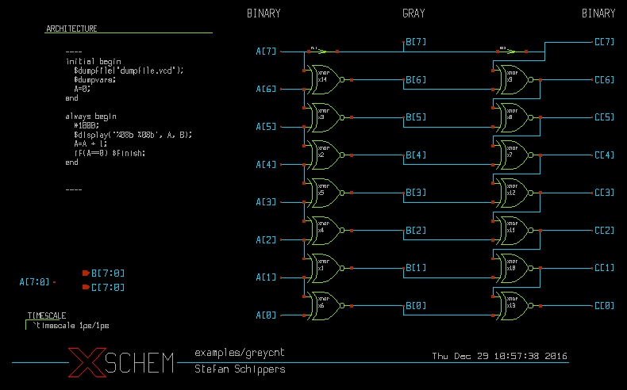
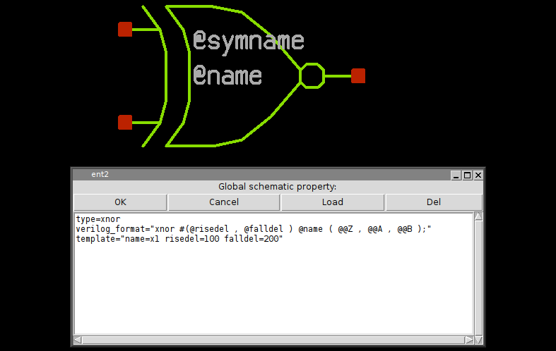
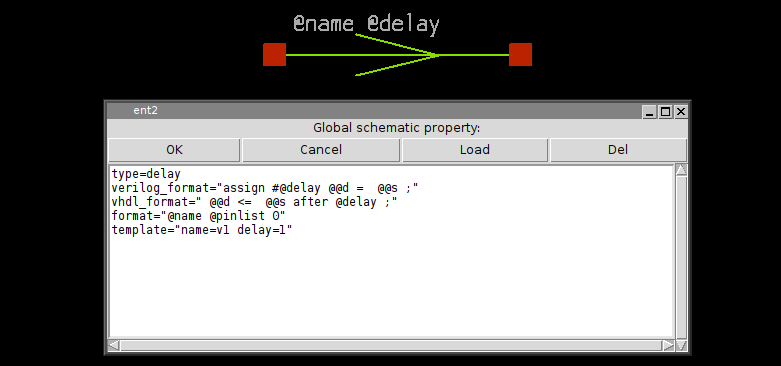
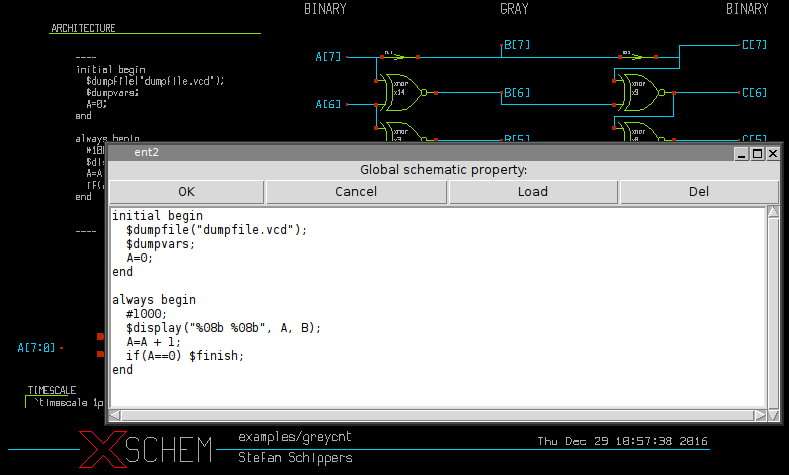
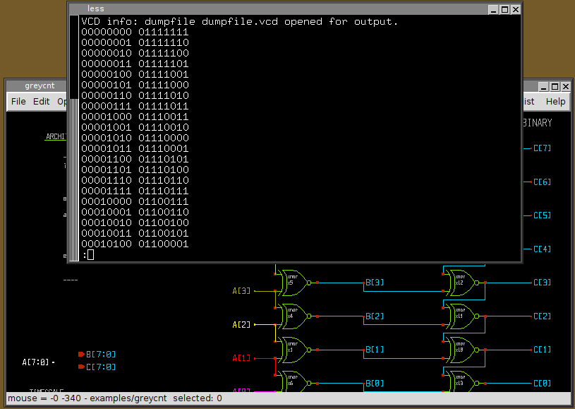
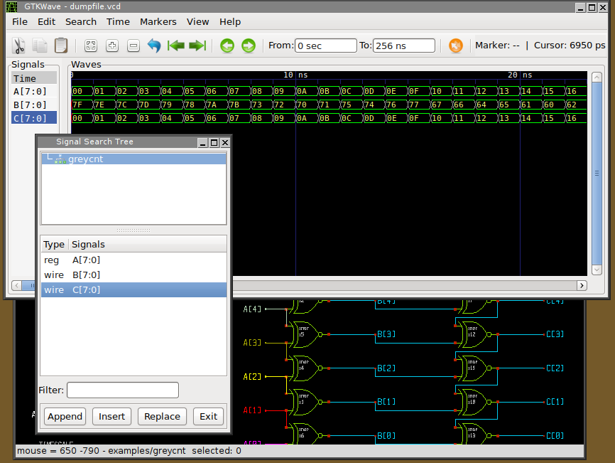
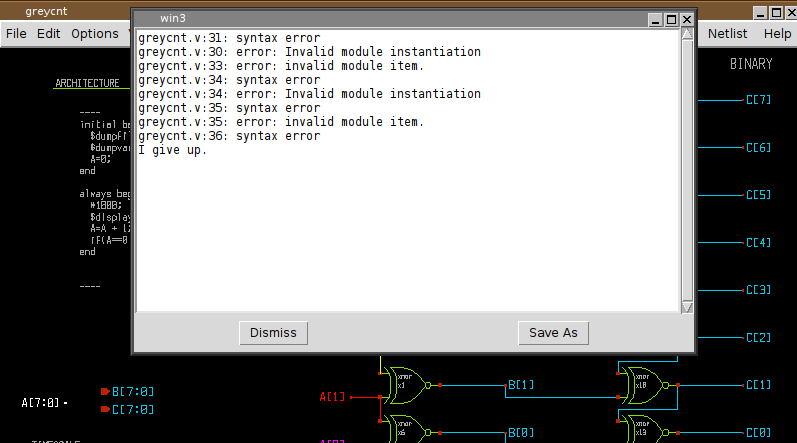
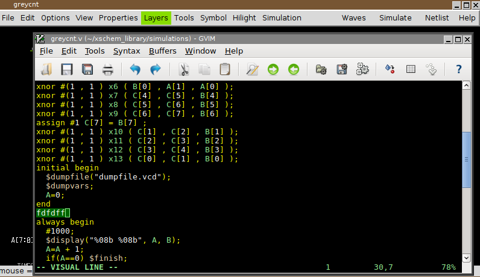
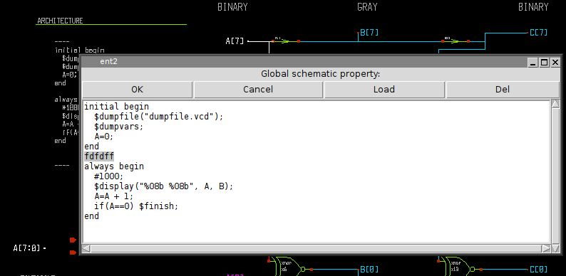

SIMULATION
VERILOG SIMULATION
This is a tutorial showing how to run a simulation with XSCHEM. The first important thing to note is that XSCHEM is just a schematic editor, so we need to setup valid bindings to simulators in the ~/.xschem file. For this tutorial we plan to do a Verilog simulation since there is a very good open source simulator available, called Icarus Verilog. There is also a good waveform viewer called gtkwave that is able to show simulator results. Install these two valuable tools and setup installation paths in .xschem:
...
## icarus verilog
set iverilog_path $env(HOME)/verilog/bin/iverilog
set vvp_path $env(HOME)/verilog/bin/vvp
set iverilog_opts {-g2012}
...
## gtkwave
set gtkwave_path $env(HOME)/gtkwave/bin/gtkwave
...
In the XSCHEM distribution there is one example design, examples/greycnt.sch.
Load this design:
user:~$ xschem examples/greycnt
This testbench has a 8 bit input vector A[7:0] and two output vectors, B[7:0] and C[7:0] the B[7:0] is a grey coded vector, this mean that if A[] is incremented as a binary number B will increment by changing only one bit at a time. The C[7:0] vector is the reverse transformation from grey-code to binary, so at the end if simulation goes well C[7:0] == A[7:0]. In this schematic there are some components, the first one is the xnor gate, the second one is the assign element. The 'xnor' performs the logical 'Not-Xor' of its inputs, while 'assign' just propagates the input unchanged to the output, optionally with some delay. This is useful if we want to change the name of a net (putting two labels with different names on the same net is not allowed, since this is normally an error, leading to a short circuit).
An Ex-Nor gate can be represented as a verilog primitive, so for the xnor gate we just need to setup a verilog_format attribute in the global property string of the xnor.sym gate:
the 'assign' symbol is much simpler, in this property string you see the definition for SPICE (format attribute), Verilog (verilog_format) and VHDL (vhdl_format). This shows how a single symbol can be used for different netlist formats.
While showing the top-level testbench greycnt set XSCHEM in Verilog mode (menu Options->Verilog radio button, or <Shift>V key) and press the edit property 'q' key, you will see some verilog code:
This is the testbench behavioral code that generates stimuli for the simulation and gives instructions on where to save simulation results. If you generate the verilog netlist with the Netlist button on the right side of the menu bar (or <Shift>N key) a greycnt.v file will be generated in the simulation directory (${HOME}/xschem_library/simulations is the default path in the XSCHEM distribution, but can be changed with the set netlist_dir $env(HOME)/simulations in ~/.xschem file):
`timescale 1ps/1ps
module greycnt (
output wire [7:0] B,
output wire [7:0] C
);
reg [7:0] A ;
xnor #(1 , 1 ) x2 ( B[4] , A[5] , A[4] );
xnor #(1 , 1 ) x3 ( B[5] , A[6] , A[5] );
xnor #(1 , 1 ) x14 ( B[6] , A[7] , A[6] );
assign #1 B[7] = A[7] ;
xnor #(1 , 1 ) x1 ( B[1] , A[2] , A[1] );
xnor #(1 , 1 ) x4 ( B[2] , A[3] , A[2] );
xnor #(1 , 1 ) x5 ( B[3] , A[4] , A[3] );
xnor #(1 , 1 ) x6 ( B[0] , A[1] , A[0] );
xnor #(1 , 1 ) x7 ( C[4] , C[5] , B[4] );
xnor #(1 , 1 ) x8 ( C[5] , C[6] , B[5] );
xnor #(1 , 1 ) x9 ( C[6] , C[7] , B[6] );
assign #1 C[7] = B[7] ;
xnor #(1 , 1 ) x10 ( C[1] , C[2] , B[1] );
xnor #(1 , 1 ) x11 ( C[2] , C[3] , B[2] );
xnor #(1 , 1 ) x12 ( C[3] , C[4] , B[3] );
xnor #(1 , 1 ) x13 ( C[0] , C[1] , B[0] );
initial begin
$dumpfile("dumpfile.vcd");
$dumpvars;
A=0;
end
always begin
#1000;
$display("%08b %08b", A, B);
A=A + 1;
if(A==0) $finish;
end
endmodule
you will recognize the behavioral code right after the netlist specifying the connection of nets to the xnor and assign gates and all the necessary verilog declarations. If you press the Simulation button the Icarus Verilog simulator will be executed to compile (iverilog) and run (vvp) the simulation, a terminal window will show the simulation output, in this case the input vector A[7:0] and the grey coded B[7:0] vectors are shown. You can quit the simulator log window by pressing 'q'.
If simulation completes with no errors waveforms can be viewed. Press the Waves button in the top-right of the menu bar, you may add waveforms in the gtkwave window:
If the schematic contains errors that the simulator can not handle instead of the simulation log a window showing the error messages from the simulator is shown:
To facilitate the debug you may wish to edit the netlist (Simulation->Edit Netlist) to locate the error, in the picture below i inserted deliberately a random string to trigger the failure:
As you can see the error is in the behavioral code of the top level greycnt schematic, so edit the global property ('q' key with no component selected) and fix the error.
